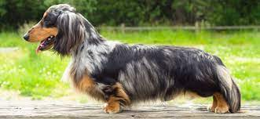

LOS DACHSHUND EN EL PLANETA TIERRA

LOS DACHSHUND Y SU FISIONOMIA
Los mal llamados perros salchicha, son una raza de perro que poseen una particular forma corporal, en este articulo veremos cada parte de su estructura.
TORSO
El torso de los teckel, es de una forma longitudinal, desproporcionado con respecto a sus miembros, la columna posee un largo de hasta 40cm, lo cual acarrea potenciales patologias discales, ya que movimientos inadecuados, exceso de peso y la falta de musculatura, suelen conllevar a lumbalgias, pinzamientos y hasta hernias de discos intervertebrales, pudiendo ocasionar dolores y hasta paralisis del hemicuerpo inferior.
MIEMBROS
Tanto los miembros anteriores como los posteriores son de una longitud relativamente corta, pero esto lo compensan con una gran fuerza y potencia muscular. Los dachshund son excelentes cavadores y grandes velocistas.
HOCICO
El hocico de estos canes es de una forma angosta y larga, la potencia de su mandibula es baja, pero lo compensan con su velocidad de mordida. Con sus veloces hocicos sumados a sus fuertes patas delanteras, los teckel son capaces de capturar una liebre o un tejon oculto en su madriguera en cuestion de segundos, sin causarle ningun daño. El nivel de posterioridad de los molares dificulta la limpieza de los mismos, por lo que es comun detectar piezas dentarias en estado de putrefaccion.
VARIEDAD DE MANTOS
Existen 3 diferenciadas variedades de manto de acuerdo al tipo de pelaje:
Pelo corto

Pelo largo
Pelo duro
RAZAS COMPATIBLES
Estos perros son poco sociables, pero se llevan bien con las siguientes razas:
- Belga Malinois
- Labrador
- Boxer
- Mestizos